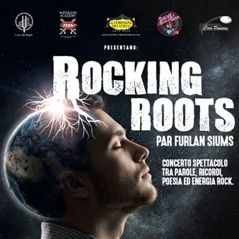

da sab 28 nov a dom 29 nov
Rocking roots – Coro del Rojale Story
28 Nov 2026 20:45 Auditorium Mons. Pigani Via Battaglione Julio 8 - 33010 Remugnano di Reana del Rojale 29 Nov 18:00 Concerto spettacolo tra parole, ricordi, poesia ed energia rock celebrativo dei 50° anniversario della fondazione del Coro del Rojale Un viaggio unico che ricama…
 Indicazioni
Indicazioni
- Costi e prenotazioni
- Costo non indicato · Prenotazione non indicata
- Programma
- Programma da verificare. Apri la fonte ufficiale per orari e possibili aggiornamenti.
- In caso di maltempo
- Nessuna indicazione specifica pubblicata.
- Note
- Acquisito automaticamente dalla fonte.
L’EVENTO
Descrizione completa
Concerto spettacolo tra parole, ricordi, poesia ed energia rock celebrativo dei 50° anniversario della fondazione del Coro del Rojale
Un viaggio unico che ricama memoria, lingue, luoghi e musiche leggendarie che hanno segnato intere generazioni:dai Pink Floyd ai Nirvana, dai Led Zeppelin a Jimi Hendrix e Michael Jackson.
Ideato e scritto da Samuele Cattarossi. Interpretato da: gli attori de la Compagnia dei Guitti e Matarans Academy. Regia di Sabine Cattarossi.
Musiche interpretate da: Dave e i Bachi da Seta con il coordinamento musicale di Federico Marcon, Coro del Rojale e Coro Panarie. direttore: maestro PaoloParoni.
28 novembre ore 20:45
29 novembre ore 18:00
Biglietti disponibili su Vivaticket e presso le rivendite autorizzate
IL PROGRAMMA
Programma e orari
Appuntamenti raccolti dalle fonti elencate. Dove manca un orario, non è ancora disponibile in questa scheda.
Programma pubblicato
- Dal 2026-11-28 al 2026-11-29
INFORMAZIONI UTILI
Prima di partire
- Controllare la fonte prima di partire.
ORGANIZZAZIONE